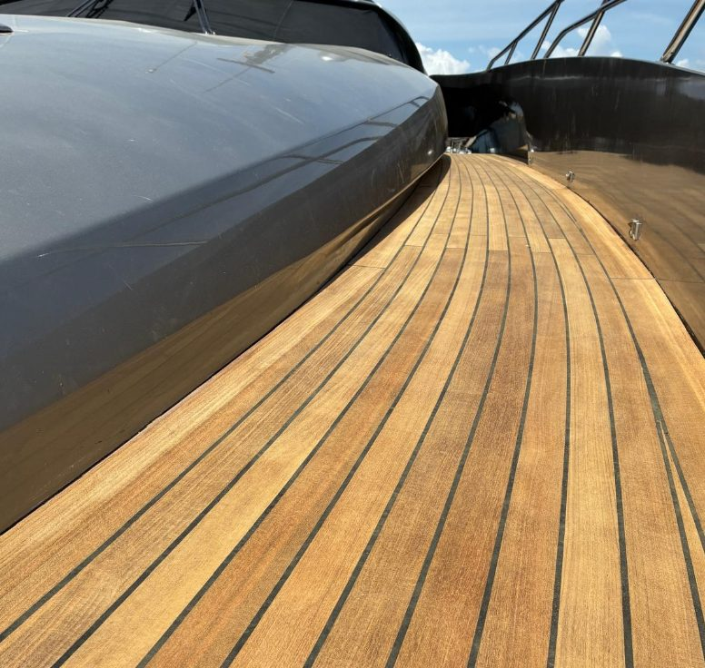
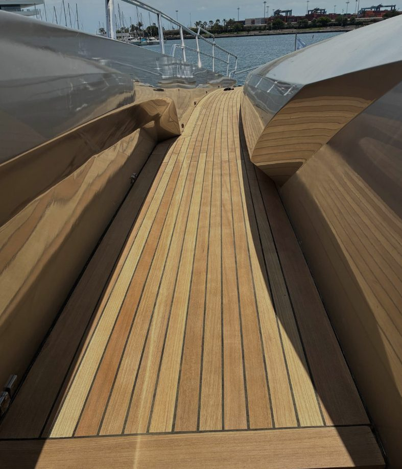
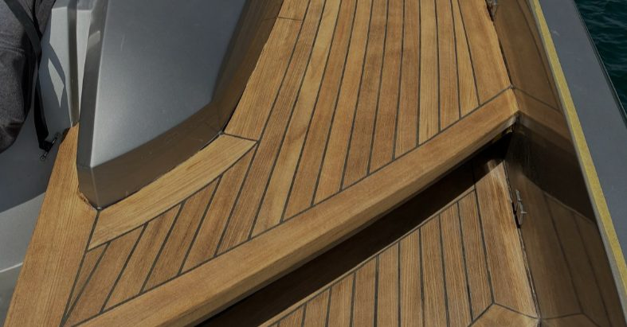
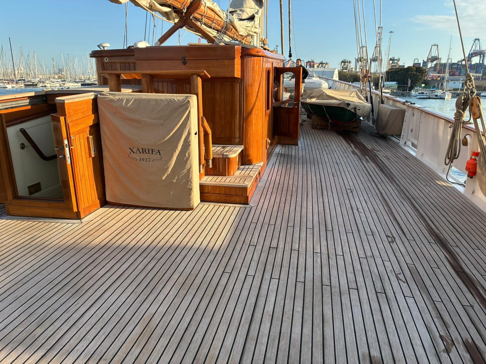

01
Teak deck renewal
We lift the worn deck and lay new made-to-measure teak, plank by plank, with every curve, seam and finishing piece.

Marine carpentry · Valencia, Spain · Since 2009
We renew teak decks, replace deck caulking and build bespoke joinery for yachts and sailing boats. Based in Valencia, we work wherever your boat is: from Miami to Croatia.
Services
We handle teak from start to finish: from lifting a worn deck to the last trim piece below deck.

We lift the worn deck and lay new made-to-measure teak, plank by plank, with every curve, seam and finishing piece.

We remove the old seams, clean them out and re-caulk so the deck is watertight again, with crisp black lines.

Cabins, galleys, lockers, hatches and trim made to measure, inside and outside the boat, in wood that stands up to the sea.

Sanding, cleaning and seam repairs on a plan designed so the deck stays with the boat all the way to its 100th year.

Craft
We are marine carpenters. We measure, cut and fit every piece on the boat itself, with the patience a wood needs when it has to live in sun and salt for decades.
Process
We see the boat or you send us photos. We measure, check the teak thickness and the condition of the seams.
We remove what needs replacing and leave a clean, dry base ready to work on.
Each plank is fitted in place and the seams are sealed with Sikaflex.
We sand, go over the trim and hand back a deck ready to sail.
Work
A selection of our work. Tap a photo to see it larger.
Before and after
Work in progress. This is how the deck looked when we started; the after photos will follow as soon as we finish.


Locations
We are based in Valencia, but we come to the boat. These are the places where we have already worked:
Valencia
Reviews
Muy profesional , atento al detalle !!! Recomendable 100%
Original review in Spanish. Our translation: Very professional, great attention to detail!!! 100% recommended
Calidad y servicio 10/10
Original review in Spanish. Our translation: Quality and service 10/10
He trabajado con ellos y son el top en carpintería náutica.
Muy profesionales y comprometidos con la calidad.
Original review in Spanish. Our translation: I have worked with them and they are the best in marine carpentry. Very professional and committed to quality.
Questions
Yes. We have worked in Miami, New York, Seattle and St. Thomas, and in France, Italy, Croatia, Greece, Germany, the Netherlands, Belgium, Turkey and Egypt. Tell us where the boat is and we will organise it.
Yes. Send us photos of the deck or the area you want fixed on WhatsApp, along with the boat's length and port, and we will give you a first assessment. The final quote is confirmed once we see the boat.
It depends on the square metres of teak, its condition and whether the whole deck or only the seams are replaced. We give you a firm timeline together with the quote.
If the teak still has enough thickness, renewing the seams and sanding is often enough. We check it during the survey and tell you what is worth doing.
Contact
Fill in what you know and we will open WhatsApp with the message ready. You just press send.
Or reach us directly